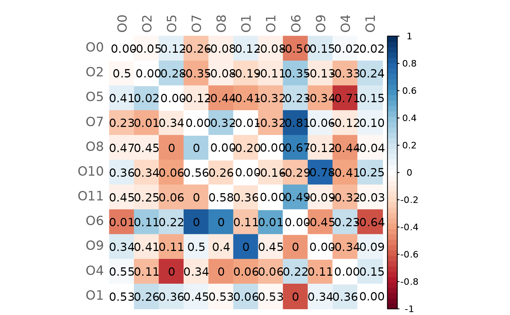
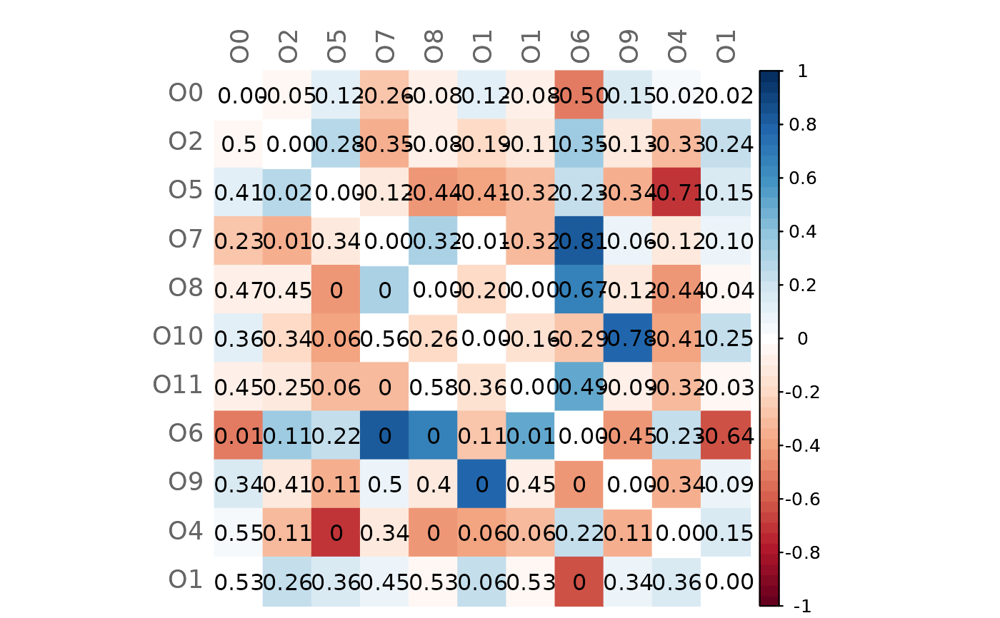

Computes the Graphlet Correlation Distance (GCD) - a graphlet-based distance measure - between two networks.
Following Yaveroglu et al. (2014), the GCD is defined as the Euclidean distance of the upper triangle values of the Graphlet Correlation Matrices (GCM) of two networks, which are defined by their adjacency matrices. The GCM of a network is a matrix with Spearman's correlations between the network's node orbits (Hocevar and Demsar, 2016).
The function considers only orbits for graphlets with up to four nodes.
Orbit counts are determined using the function count4
from orca package.
Unobserved orbits would lead to NAs in the correlation matrix, which is
why a row with pseudo counts of 1 is added to the orbit count matrices
(ocount1 and ocount2).
The function is based on R code provided by Theresa Ullmann (https://orcid.org/0000-0003-1215-8561).
Usage
calcGCD(adja1, adja2, orbits = c(0, 2, 5, 7, 8, 10, 11, 6, 9, 4, 1))Arguments
- adja1, adja2
adjacency matrices (numeric) defining the two networks between which the GCD shall be calculated.
- orbits
numeric vector with integers from 0 to 14 defining the graphlet orbits to use for GCD calculation. Minimum length is 2. Defaults to c(0, 2, 5, 7, 8, 10, 11, 6, 9, 4, 1), thus excluding redundant orbits such as the orbit o3. See details.
Value
An object of class gcd containing the following elements:
gcd | Graphlet Correlation Distance between the two networks |
ocount1, ocount2 | Orbit counts |
gcm1, gcm2 | Graphlet Correlation Matrices |
Details
By default, only the 11 non-redundant orbits are used. These are grouped according to their role: orbit 0 represents the degree, orbits (2, 5, 7) represent nodes within a chain, orbits (8, 10, 11) represent nodes in a cycle, and orbits (6, 9, 4, 1) represent a terminal node.
Examples
library(phyloseq)
# Load data sets from American Gut Project (from SpiecEasi package)
data("amgut2.filt.phy")
# Split data into two groups: with and without seasonal allergies
amgut_season_yes <- phyloseq::subset_samples(amgut2.filt.phy,
SEASONAL_ALLERGIES == "yes")
amgut_season_no <- phyloseq::subset_samples(amgut2.filt.phy,
SEASONAL_ALLERGIES == "no")
# Make sample sizes equal to ensure comparability
n_yes <- phyloseq::nsamples(amgut_season_yes)
ids_yes <- phyloseq::get_variable(amgut_season_no, "X.SampleID")[1:n_yes]
amgut_season_no <- phyloseq::subset_samples(amgut_season_no, X.SampleID %in% ids_yes)
#> Error in h(simpleError(msg, call)): error in evaluating the argument 'table' in selecting a method for function '%in%': object 'ids_yes' not found
# Network construction
net <- netConstruct(amgut_season_yes,
amgut_season_no,
filtTax = "highestFreq",
filtTaxPar = list(highestFreq = 50),
measure = "pearson",
normMethod = "clr",
zeroMethod = "pseudoZO",
sparsMethod = "thresh",
thresh = 0.5)
#> Checking input arguments ...
#> Done.
#> Data filtering ...
#> 94 taxa removed in each data set.
#> 1 rows with zero sum removed in group 1.
#> 1 rows with zero sum removed in group 2.
#> 44 taxa and 120 samples remaining in group 1.
#> 44 taxa and 162 samples remaining in group 2.
#>
#> Zero treatment in group 1:
#> Zero counts replaced by 1
#>
#> Zero treatment in group 2:
#> Zero counts replaced by 1
#>
#> Normalization in group 1:
#> Execute clr(){SpiecEasi} ...
#> Done.
#>
#> Normalization in group 2:
#> Execute clr(){SpiecEasi} ...
#> Done.
#>
#> Calculate 'pearson' associations ...
#> Done.
#>
#> Calculate associations in group 2 ...
#> Done.
#>
#> Sparsify associations via 'threshold' ...
#> Done.
#>
#> Sparsify associations in group 2 ...
#> Done.
# Get adjacency matrices
adja1 <- net$adjaMat1
adja2 <- net$adjaMat2
# Network visualization
props <- netAnalyze(net)
plot(props, rmSingles = TRUE, cexLabels = 1.7)
# Calculate the GCD
gcd <- calcGCD(adja1, adja2)
gcd
#> GCD: 2.40613
# Orbit counts
head(gcd$ocount1)
#> O0 O2 O5 O7 O8 O10 O11 O6 O9 O4 O1
#> 307981 2 0 0 0 0 3 0 0 3 0 3
#> 71543 3 0 0 0 0 4 0 0 1 0 2
#> 331820 0 0 0 0 0 0 0 0 0 0 0
#> 322235 2 1 1 0 0 0 0 0 0 0 1
#> 469709 2 1 1 0 0 0 0 0 0 0 1
#> 73352 0 0 0 0 0 0 0 0 0 0 0
head(gcd$ocount2)
#> O0 O2 O5 O7 O8 O10 O11 O6 O9 O4 O1
#> 307981 2 0 0 0 0 3 0 3 0 0 3
#> 71543 1 0 0 0 0 0 0 5 1 0 4
#> 331820 0 0 0 0 0 0 0 0 0 0 0
#> 322235 0 0 0 0 0 0 0 0 0 0 0
#> 469709 0 0 0 0 0 0 0 0 0 0 0
#> 73352 0 0 0 0 0 0 0 0 0 0 0
# GCMs
gcd$gcm1
#> O0 O2 O5 O7 O8 O10 O11
#> O0 1.0000000 0.45431964 0.3404901 0.1339970 0.1339970 0.60502382 0.3091818
#> O2 0.4543196 1.00000000 0.8341060 0.4704992 0.4704992 0.07685639 0.7072981
#> O5 0.3404901 0.83410601 1.0000000 0.5640761 0.5640761 0.12776023 0.3649530
#> O7 0.1339970 0.47049925 0.5640761 1.0000000 1.0000000 0.33412645 0.6825925
#> O8 0.1339970 0.47049925 0.5640761 1.0000000 1.0000000 0.33412645 0.6825925
#> O10 0.6050238 0.07685639 0.1277602 0.3341264 0.3341264 1.00000000 0.1905216
#> O11 0.3091818 0.70729807 0.3649530 0.6825925 0.6825925 0.19052158 1.0000000
#> O6 0.1339970 0.47049925 0.5640761 1.0000000 1.0000000 0.33412645 0.6825925
#> O9 0.5960912 0.09182761 0.1452644 0.3638144 0.3638144 0.99263054 0.2112551
#> O4 0.2375512 0.22242827 0.2857143 0.5640761 0.5640761 0.12776023 0.3649530
#> O1 0.7481584 0.31969180 0.4248120 0.2396263 0.2396263 0.79591010 0.1091601
#> O6 O9 O4 O1
#> O0 0.1339970 0.59609122 0.2375512 0.7481584
#> O2 0.4704992 0.09182761 0.2224283 0.3196918
#> O5 0.5640761 0.14526441 0.2857143 0.4248120
#> O7 1.0000000 0.36381438 0.5640761 0.2396263
#> O8 1.0000000 0.36381438 0.5640761 0.2396263
#> O10 0.3341264 0.99263054 0.1277602 0.7959101
#> O11 0.6825925 0.21125512 0.3649530 0.1091601
#> O6 1.0000000 0.36381438 0.5640761 0.2396263
#> O9 0.3638144 1.00000000 0.1452644 0.7991260
#> O4 0.5640761 0.14526441 1.0000000 0.4248120
#> O1 0.2396263 0.79912603 0.4248120 1.0000000
gcd$gcm2
#> O0 O2 O5 O7 O8 O10 O11
#> O0 1.0000000 0.50195290 0.2172958 0.3929341 0.2172958 0.4845458 0.3929341
#> O2 0.5019529 1.00000000 0.5503546 0.8165505 0.5503546 0.2619803 0.8165505
#> O5 0.2172958 0.55035458 1.0000000 0.6825925 1.0000000 0.5369313 0.6825925
#> O7 0.3929341 0.81655052 0.6825925 1.0000000 0.6825925 0.3459888 1.0000000
#> O8 0.2172958 0.55035458 1.0000000 0.6825925 1.0000000 0.5369313 0.6825925
#> O10 0.4845458 0.26198027 0.5369313 0.3459888 0.5369313 1.0000000 0.3459888
#> O11 0.3929341 0.81655052 0.6825925 1.0000000 0.6825925 0.3459888 1.0000000
#> O6 0.6318618 0.12253339 0.3341264 0.1905216 0.3341264 0.6276289 0.1905216
#> O9 0.4502107 0.22249134 0.4826536 0.3030534 0.4826536 0.2155385 0.3030534
#> O4 0.2172958 0.55035458 1.0000000 0.6825925 1.0000000 0.5369313 0.6825925
#> O1 0.7296858 0.07776854 0.2788342 0.1440064 0.2788342 0.5466671 0.1440064
#> O6 O9 O4 O1
#> O0 0.6318618 0.4502107 0.2172958 0.72968585
#> O2 0.1225334 0.2224913 0.5503546 0.07776854
#> O5 0.3341264 0.4826536 1.0000000 0.27883424
#> O7 0.1905216 0.3030534 0.6825925 0.14400642
#> O8 0.3341264 0.4826536 1.0000000 0.27883424
#> O10 0.6276289 0.2155385 0.5369313 0.54666706
#> O11 0.1905216 0.3030534 0.6825925 0.14400642
#> O6 1.0000000 0.8144348 0.3341264 0.87997622
#> O9 0.8144348 1.0000000 0.4826536 0.71311180
#> O4 0.3341264 0.4826536 1.0000000 0.27883424
#> O1 0.8799762 0.7131118 0.2788342 1.00000000
# Test Graphlet Correlations for significant differences
gcmtest <- testGCM(gcd)
#> Perform Student's t-test for GCM1 ...
#> Adjust for multiple testing ...
#>
#> Proportion of true null hypotheses: 0.2
#> Done.
#>
#> Perform Student's t-test for GCM2 ...
#> Adjust for multiple testing ...
#>
#> Proportion of true null hypotheses: 0.02
#> Done.
#>
#> Test GCM1 and GCM2 for differences ...
#> Adjust for multiple testing ...
#>
#> Proportion of true null hypotheses: 0.58
#> Done.
### Plot heatmaps
# GCM 1 (with significance code in the lower triangle)
plotHeat(gcmtest$gcm1,
pmat = gcmtest$pAdjust1,
type = "mixed")
 # GCM 2 (with significance code in the lower triangle)
plotHeat(gcmtest$gcm2,
pmat = gcmtest$pAdjust2,
type = "mixed")
# Difference GCM1-GCM2 (with p-values in the lower triangle)
plotHeat(gcmtest$diff,
pmat = gcmtest$pAdjustDiff,
type = "mixed",
textLow = "pmat")

# GCM 2 (with significance code in the lower triangle)
plotHeat(gcmtest$gcm2,
pmat = gcmtest$pAdjust2,
type = "mixed")
# Difference GCM1-GCM2 (with p-values in the lower triangle)
plotHeat(gcmtest$diff,
pmat = gcmtest$pAdjustDiff,
type = "mixed",
textLow = "pmat")
